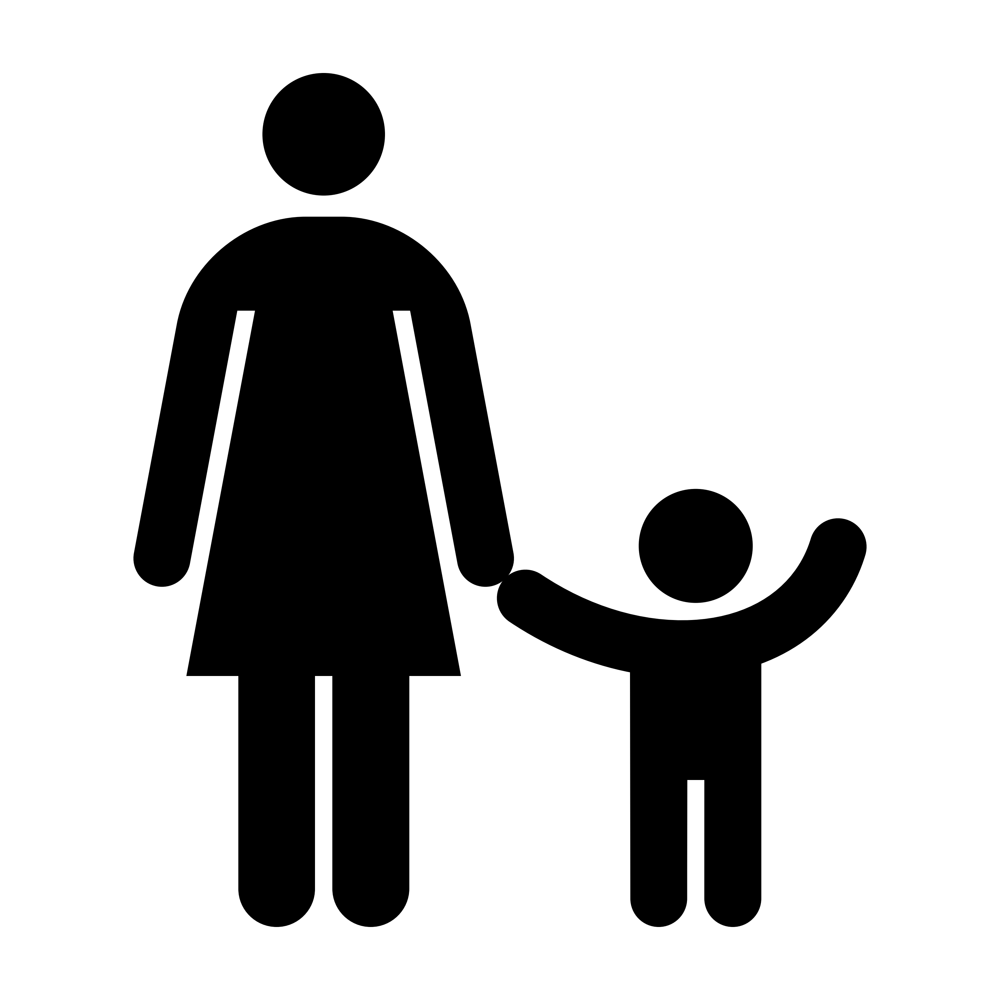

Esercizi riabilitativi ed attivita' motorie

Da 0 a 3 anni
Per i più piccoli ecco alcune attività per promuoverne e facilitare lo sviluppo neuro e psicomotorio, e proposte di esercizi adeguati a questa fascia d'età. Seguite i consigli del terapista.

Da 3 a 5 anni
Per i bambini in età prescolare ecco alcune attività per sostenere lo sviluppo neuro e psicomotorio, esercizi da effettuare in un contesto di gioco motivante, e giochi motori per divertirsi da soli o in famiglia. Seguite i consigli del terapista.
Da 6 a 18 anni
Ecco alcuni esercizi per i ragazzi più grandi!
Scegliete insieme al vostro terapista tipologia e difficoltà!